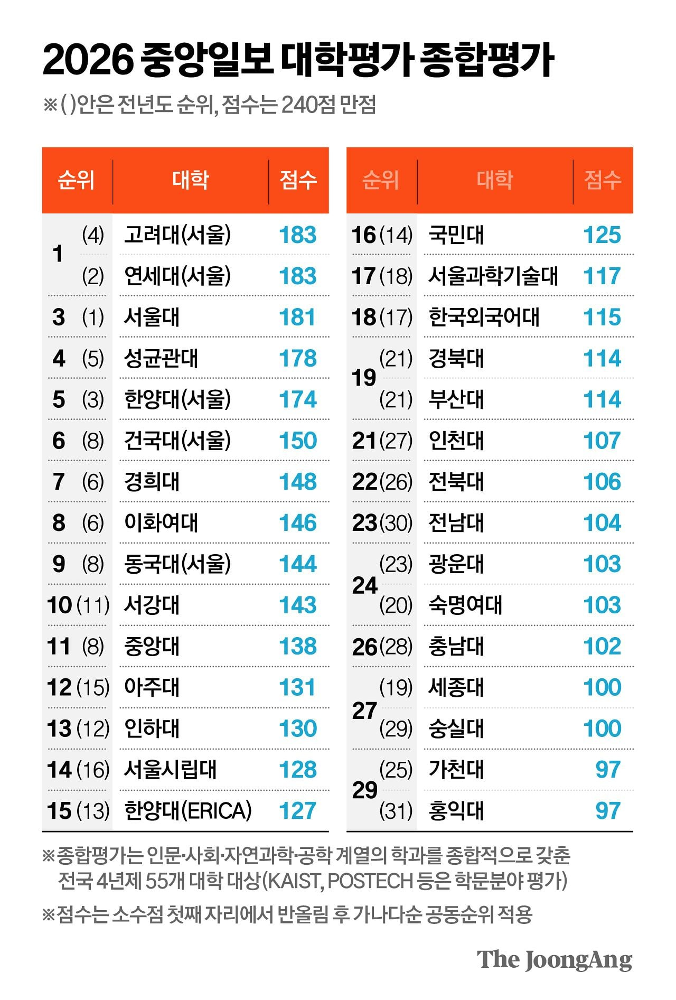

참고로 이건 전국 모든 대학을 대상으로 하는 것은 아니고 55개 대학들 가지고 중앙일보가 자체적으로 평가하는 것임
국제적으로 대학평가기관들이 몇 있는데 일단 국내에서는 이게 사실상 유일
대학들 점수 간격이 촘촘해서 지표 한두개 비중 따라서 순위가 휙휙 바뀔 수도 있으니 그냥 이렇구나 정도로 참고하면 될 듯

참고로 이건 전국 모든 대학을 대상으로 하는 것은 아니고 55개 대학들 가지고 중앙일보가 자체적으로 평가하는 것임
국제적으로 대학평가기관들이 몇 있는데 일단 국내에서는 이게 사실상 유일
대학들 점수 간격이 촘촘해서 지표 한두개 비중 따라서 순위가 휙휙 바뀔 수도 있으니 그냥 이렇구나 정도로 참고하면 될 듯
대학순위는 중앙일보가 이러니 저러니 해도
결국 입결임
와 건대
이화가 서강대보다 높다고..?
병원 있지, 기부금 세지, 등록금 세서 장학금 한도 높지, 사회적 평판도 아직 무시 못하지....
이대는 여대 특혜빨로 다져진게 너무 많아서.. 입결이야 현실화되고있지만 이대 특유의 정신병+그동안 역사가 사라지려면 시간 꽤걸릴거임
대학들 광고삥뜯을라고 순위 하는거 같은데ㅋㅋㅋ
한양대 건국대 차이 하늘과땅이네
이거 유리하게 나온 대학은
맨날 입시설명회에서 재탕함
우리학교 아직 한손에 꼽는군..
암만 전남대가 박살낫어도 전북대가 위라는건 좀
전남대 치대 의대 있지않나 왜 떨어짐
서강대 부산대 홍익대가 생각보다 낮게 나옴
홍익대는 저게 맞다
그러게 서강이 건동보다 낮은검 흠..ㅋ
고대에 있던 리트냥이가 서울대로 가니까 순위가 뒤바뀐건가ㅋㅋ
대학이 위치도 중요하지만 결국 시설과 교수진이 제일 중요하지 의대, 로스쿨 설치된 대학이 진짜 종합대학이고
나머진 전문대로 다 강등시켜야함
외대 처참하네
홍익대는 대체 어떻게 된거
경북대는 11등에서 19등끼지떨어졌냐
이제는 진짜 지잡 다됐네
애초에 경북대가 11위까지 간 적이 없었을걸?
애시당초 서울대 제외한 국립대가 중앙일보 순위 15위 안쪽에 들어간 적이 없을거
내가 알기론 최근 10년 중 지금이 최고순위인거 같은데
다시찾아보니 입학할때 그냥 잘 나온 순위만 뽑아서 보여줬나봄
평판도6위에 교수연구가 11위. 종합은 15위
홍대가 더 처참한데?
그렇게 하려면 인천공항급 되는 국제공항이 세종에 있어야함 기업들이 악쓰고 서울에 붙어있는이유가 공항과의 거리때문인것도 있어서...